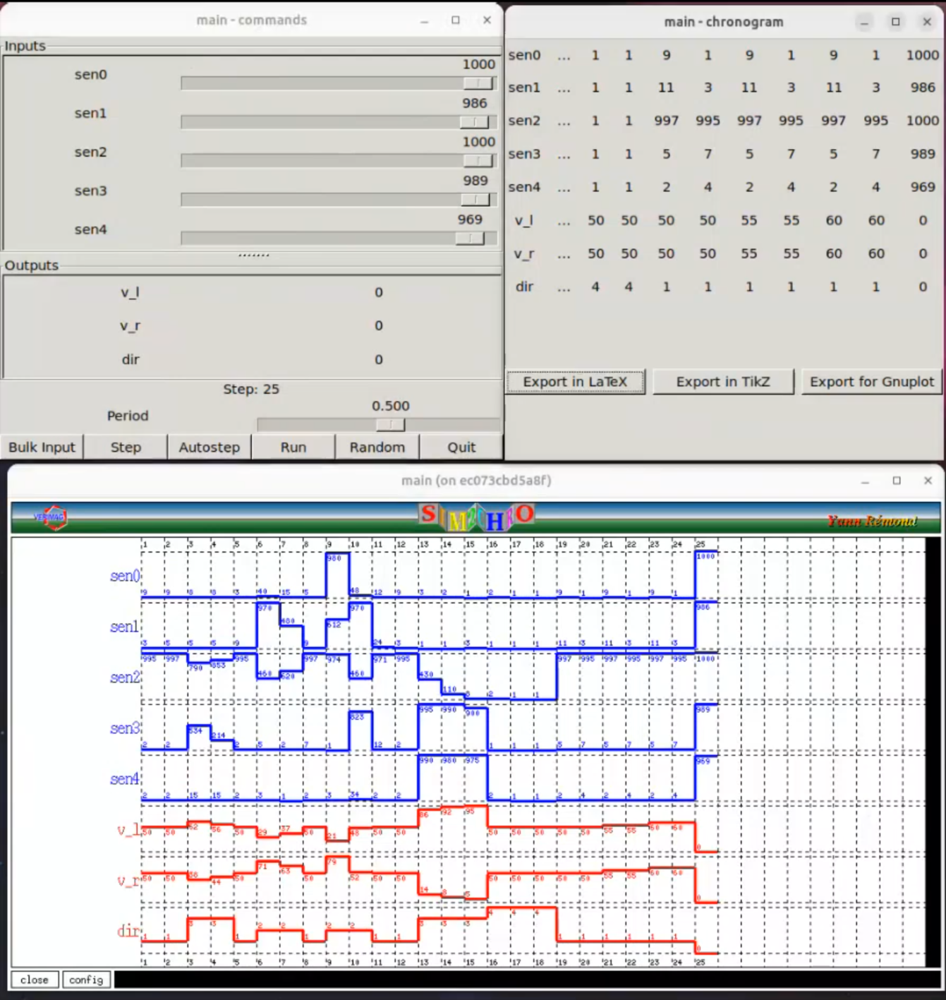

Submitted by:
- Santanu Sahoo (23m0777)
- Sm Arif Ali (23m0822)
- Soumik Dutta (23m0826)
- Arnab Bhakta (23m0835)
This document explains the implementation of a PID-based line-following robot in Heptagon. The robot uses five white-line sensors to detect a black line on a white surface and adjusts its motor velocities accordingly to stay on track.
sen0, sen1, sen2, sen3, sen4), each providing values between
0-1023.
v_l: Velocity of the left motor (0-100).v_r: Velocity of the right motor (0-100).dir: Robot movement direction:
0 - Stop1 - Forward2 - Left3 - Right4 - Backward0-1023.kp = 0.06 has been selected as proportional gain that balances
responsiveness without excessive oscillations.kd and ki: Set to zero initially;0-100.PID Controller with direct sensor values has been used.
Following are the details.
The five sensor values are processed to compute the weighted avg of readings.
The sensor_avg calculation formula is:
$$
sensor\_avg = \frac{\sum (sensor_i \times weight_i)}{\sum sensor_i}
$$
In ideal condition only the middle sensor would be on black so ideal_value would be 0.
$$
error
= sensor\_avg - ideal\_value
= sensor\_avg
$$
So, The PID error is computed on sensor_avg using proportional, integral, and derivative
components:
node calPidError(value: int) returns (pid_error: int)
var p, i, d: int;
let
p = value;
(* Integral term with overflow prevention *)
i = if ((0->pre(i) + value) <= max_i)
then (0->pre(i) + value)
else
max_i;
d = value - 0->pre(value);
pid_error = (kp*p + ki*i + kd*d) / kscale;
tel
max_i = 200,000,000: Limits the integral term to prevent overflow during
long-term accumulation. if sensor_sum > (black_thresh*5) then 0 -- all black -> stop
else if sensor_sum < (white_thresh*5) then 4 -- all white -> backward
else if pid_error = 0 then 1 -- no error -> move forward
else if sensor_avg < 0 then 2 -- Negative error -> turn left
else if sensor_avg > 0 then 3 -- Positive error -> turn right
else 0; -- fallback/default
Adjusting motor velocities based on pid_error while ensuring they remain within the [0,100] range.
In straight line
v_l = 50 -> safe_motor_update(pre(v_l), 5);
v_r = 50 -> safe_motor_update(pre(v_r), 5);
During turn: pid_error would be negative for left turn and positive for right turn.
v_l = safe_motor_update(50, pid_error);
v_r = safe_motor_update(50, -1*pid_error);

| Step | sen0 | sen1 | sen2 | sen3 | sen4 | v_l | v_r | dir | comment |
|---|---|---|---|---|---|---|---|---|---|
| 1 | 9 | 3 | 995 | 2 | 2 | 50 | 50 | 1 | straight |
| 2 | 9 | 5 | 997 | 2 | 2 | 55 | 55 | 1 | straight |
| 3 | 8 | 5 | 790 | 534 | 15 | 64 | 36 | 3 | minor right => +-10 |
| 4 | 8 | 5 | 853 | 214 | 15 | 57 | 43 | 3 | minor right => +-10 |
| 5 | 3 | 9 | 995 | 2 | 2 | 50 | 50 | 1 | straight |
| 6 | 40 | 970 | 460 | 5 | 3 | 26 | 74 | 2 | angled left => -+25 |
| 7 | 15 | 480 | 620 | 2 | 1 | 35 | 65 | 2 | angled left => -+25 |
| 8 | 5 | 9 | 997 | 7 | 2 | 50 | 50 | 1 | straight |
| 9 | 980 | 612 | 974 | 1 | 3 | 16 | 84 | 2 | sharp left => -+35 |
| 10 | 48 | 970 | 460 | 823 | 34 | 48 | 52 | 2 | sharp left => -+35 |
| 11 | 12 | 24 | 971 | 12 | 2 | 49 | 51 | 2 | straight |
| 12 | 9 | 3 | 995 | 2 | 2 | 50 | 50 | 1 | straight |
| 13 | 3 | 1 | 430 | 995 | 990 | 92 | 8 | 3 | U-turn right => +-50 |
| 14 | 2 | 1 | 110 | 990 | 980 | 99 | 1 | 3 | U-turn right => +-50 |
| 15 | 1 | 3 | 8 | 900 | 975 | 100 | 0 | 3 | U-turn right => +-50 |
| 16 | 2 | 1 | 2 | 1 | 2 | 50 | 50 | 4 | outoftrack => back |
| 17 | 1 | 1 | 1 | 1 | 1 | 50 | 50 | 4 | outoftrack => back |
| 18 | 1 | 1 | 1 | 1 | 1 | 50 | 50 | 4 | outoftrack => back |
| 19 | 9 | 11 | 997 | 5 | 2 | 50 | 50 | 1 | straight |
| 20 | 1 | 3 | 995 | 7 | 4 | 55 | 55 | 1 | accelerate => ++5 |
| 21 | 9 | 11 | 997 | 5 | 2 | 60 | 60 | 1 | accelerate => ++5 |
| 22 | 1 | 3 | 995 | 7 | 4 | 65 | 65 | 1 | accelerate => ++5 |
| 23 | 9 | 11 | 997 | 5 | 2 | 70 | 70 | 1 | accelerate => ++5 |
| 24 | 1 | 3 | 995 | 7 | 4 | 75 | 75 | 1 | accelerate => ++5 |
| 25 | 1000 | 986 | 1000 | 989 | 969 | 0 | 0 | 0 | finish => stop |